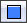
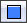

UDN
Search public documentation:
ViewportToolbar
日本語訳
中国翻译
한국어
Interested in the Unreal Engine?
Visit the Unreal Technology site.
Looking for jobs and company info?
Check out the Epic games site.
Questions about support via UDN?
Contact the UDN Staff
中国翻译
한국어
Interested in the Unreal Engine?
Visit the Unreal Technology site.
Looking for jobs and company info?
Check out the Epic games site.
Questions about support via UDN?
Contact the UDN Staff
Viewport Toolbar
Overview
Viewport Options
Show
This options opens a sub-menu containing all the various Show flags that can be toggled on or off to show or hide certain types of geometry and helpers in the viewport. There is also an option to reset the current Show flags to the default values, which can be very useful when something is not appearing in your viewport that you are sure should be, as well as the ability to set the collision mode used when displaying collision. For more information on the various Show flags, see the Show Flags page.Show Volumes
This option opens a sub-menu with flags for toggling the display of all of the different types of volumes available, as well as the ability to show all and hide all.Show Groups
This option opens a sub-menu containing flags for toggling the display of any groups, and subsequently the actors contained within those groups, the user has created in the current level(s), as well as the ability to show all and hide all.Viewport Type
This option opens a sub-menu containing the types of viewports available, Perspective, Top, Front, and Side, enabling you to switch the current viewport to any particular type of viewport.Realtime
Toggling this option on will turn on realtime feedback in the viewport for previewing animated materials, particle effects, sounds, etc. Hotkey: Ctrl + RShow FPS
Toggling this option on will display the current frames per second that the level is being rendered at in the current viewport. This gives quick feedback to areas where performance may be an issue, but keep in mind that there are other things going on in the editor and other viewports being rendered so it may not always be the most accurate in terms of pure numbers. Hotkey: Shift + HShow Stats
Toggling this option on will enable the display of statistics in the level editor viewports just as they can be viewed in the game. Different sets of statistics can be enabled through the use of console commands entered into the editor’s console in the status bar. Hotkey: Shift + L For more information on what statistics commands are available, see the Statistics Console Commands?.View Modes
This section contains a list of the different view modes available that the viewport can use to render the scene. For more information on view modes, see the View Modes page.Game View
Toggling this option on causes the viewport to render the level as the game would render it, hiding all items that would not be displayed in the normal game. Hotkey: GUnreal Matinee Preview
Toggling this option on causes the viewport to show a preview of the current Matinee sequence when the Matinee Editor is open.Unlit Movement
Toggling this option on causes the viewport to switch to the Unlit view mode when the user is navigating within the viewport in order to make the navigation smoother and quicker. In large scenes with a great deal of geometry, moving around in the viewports can be cumbersome. Enabling this option makes this situations much easier.View Culling / Occlusion
Toggling this option on sets the current viewport as the occlusion parent and activates occlusion viewing in any other perspective viewports that currently exist in the editor. This makes it possible to see what geometry is being occluded and culled from the viewpoint of the occlusion parent in any other perspective viewport.Viewport Type
Real Time
 Toggling this button on will turn on realtime feedback in the viewport for previewing animated materials, particle effects, sounds, etc.
Hotkey: Ctrl + R
Toggling this button on will turn on realtime feedback in the viewport for previewing animated materials, particle effects, sounds, etc.
Hotkey: Ctrl + R
View Modes
Brush Wireframe
This button causes the viewport to render using the brush wireframe view mode. Hotkey: Alt + 1Wireframe
This button causes the viewport to render using the wireframe view mode. Hotkey: Alt + 2Unlit
This button causes the viewport to render using the unlit view mode. Hotkey: Alt + 3Lit
This button causes the viewport to render using the lit view mode. Hotkey: Alt + 4Detail Lighting
This button causes the viewport to render using the detail lighting view mode. Hotkey: Alt + 5Lighting Only
This button causes the viewport to render using the lighting only view mode. Hotkey: Alt + 6Light Complexity
 This button causes the viewport to render using the light complexity view mode.
Hotkey: Alt + 7
This button causes the viewport to render using the light complexity view mode.
Hotkey: Alt + 7
Texture Density
This button causes the viewport to render using the texture density view mode. Hotkey: Alt + 9Shader Complexity
 This button causes the viewport to render using the shader complexity view mode.
Hotkey: Alt + 8
This button causes the viewport to render using the shader complexity view mode.
Hotkey: Alt + 8
LightMap Density
This button causes the viewport to render using the lightmap density view mode. Hotkey: Alt + 0Lighting Only w/ Texel Density
This button causes the viewport to render using the lighting only with texel density view mode. Hotkey: Alt + Hyphen ( - )Game View
Lock Viewport
 Toggling this button on causes the viewport to ignore commands to reposition the viewport’s camera, such as focusing on the selected actor using the context menu’s Go to Actor command.
Toggling this button on causes the viewport to ignore commands to reposition the viewport’s camera, such as focusing on the selected actor using the context menu’s Go to Actor command.
Lock Selected Actors to Camera
Level streaming Volume Previs
Post Process Volume Previs
Camera Movement Speed
 
Left-clicking this button cycles through the available camera movement speeds. Right-clicking the button will open a menu to choose a speed from directly.

Left-clicking this button cycles through the available camera movement speeds. Right-clicking the button will open a menu to choose a speed from directly.